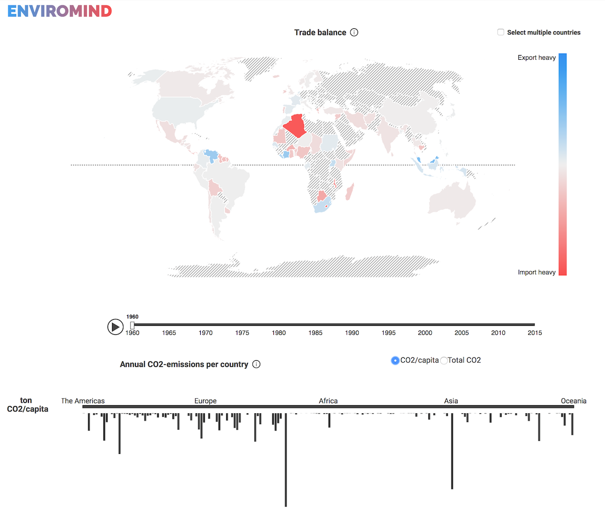
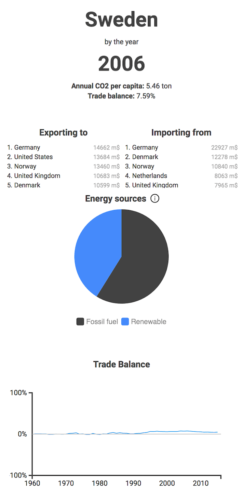
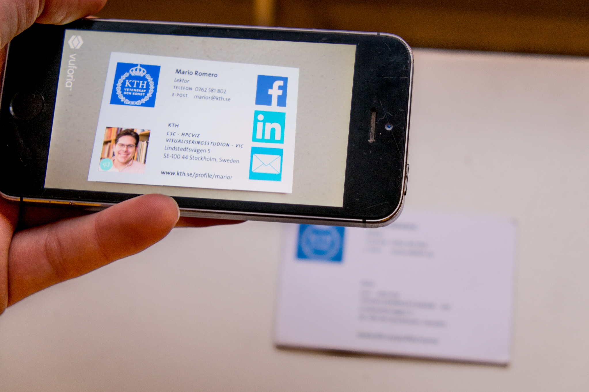

Enviromind
This is a group project within the course Information Visualization at KTH and developed during spring 2017. Enviromind lets you compare CO2 emissions and trade balance around the world and since 1960. The idea is to raise awareness that CO2 emissions is a global problem and that we can not only look at our own emissions when we trade with the rest of the world.


What happens with CO2 emissions if we look at emissions per capita or in total for each land? And how does different countries compare to each other over time? What is happening in China in the 21th century?
For this project I've worked with the web development and has for example done the interaction between the timeline and responding visualizations, the functional parts of the CO2 bar chart and worked with color coding of the map.

This project will compete at the C Awards may 2017. You can see the current project demo online here
Group members: David Samuelsson, Frida Eklund, Viktor Gustavsson, Emma, Klint, Victor Gustavsson, Josefine Möller, Fredrik Spansk, Gustav Höglund
AR-Business Card
In a more digital world than ever, the classic business card is starting to get old. The limited physical space of the card leaves little room for information and thanks to smartphones, we no longer need to keep our contacts on physical cards.
This project aims to investigate how augmented reality can be used to extend the information printed on a business card by developing a prototype and evaluate it. When a business card is viewed through the camera of a smartphone additional information will show and link you to social media, show a portfolio or give a short audio presentation of your new business contact.

The prototype is developed in Unity with the Vuforia SDK and a small user evaluation has been conducted to test how the application would work in a typical scenario. The evaluation shows that the users are positive to the product but that further development can be done to create a more intuitive experience.
This project was an introduction to working with AR in the course Multimodal interaction and interfaces and the development was a tight group process in every step of the way.
See the video
Group members: David Samuelsson, Jonna Karlsson Sellén, Sandra Dang, Desireé Fredriksson